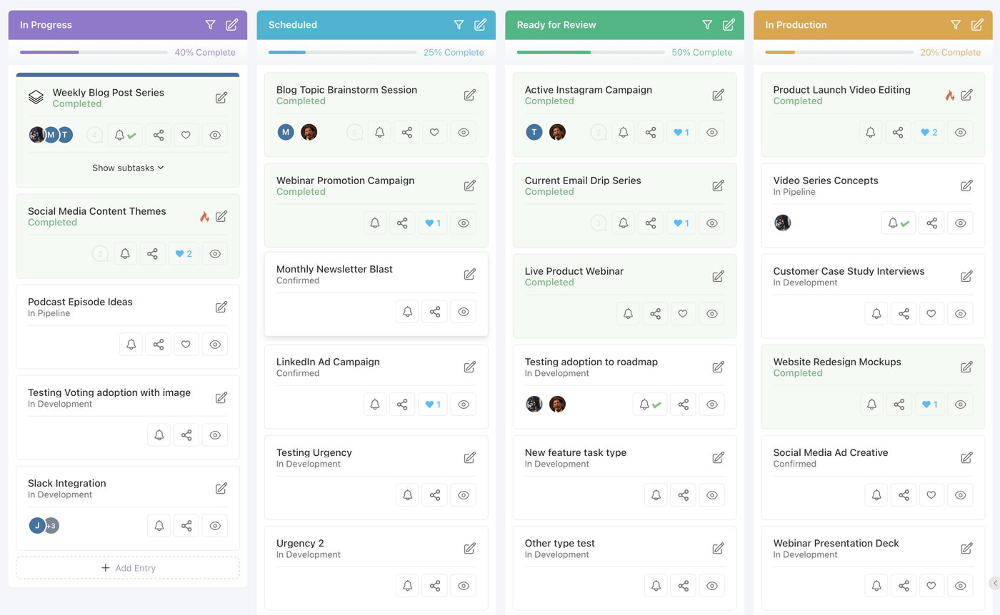
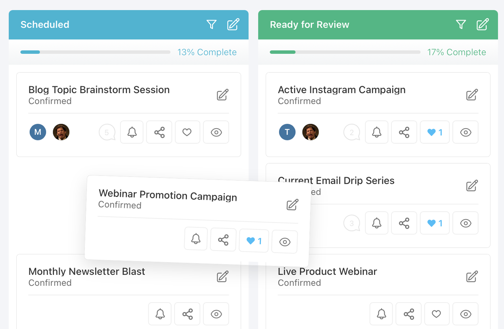

Roadmap & Task Management
Your roadmap is the centerpiece of your PathPro project. It gives your team a structured place to plan work and gives your community a transparent view of what's coming next. Task groups, tasks, subtasks, and assignments all work together to keep everyone aligned.
Task Groups
Task groups are the top-level containers on your roadmap. Think of them as columns, phases, or sprints -- whatever organizational model fits your workflow. Each task group holds a collection of related tasks and appears as a distinct section on your roadmap page.
To create a task group, navigate to your project's roadmap and click "Add Task Group". Give it a name (e.g., "Q1 Sprint," "In Progress," "Backlog") and optionally choose a custom icon to help visually distinguish it from other groups. Icons appear alongside the group name in the sidebar and on the roadmap itself.
You can reorder task groups by dragging them into your preferred sequence. The order you set is the order your team and community will see. This makes it easy to arrange groups chronologically, by priority, or by any system that makes sense for your project.
Every task group has a visibility status that controls how it behaves:
- Published -- The task group and its tasks are visible to everyone, including community members on the public roadmap. Use this for work you're ready to share.
- Draft -- The task group is only visible to team members (Admins and Team Members). Community members will not see it at all. This is ideal for planning upcoming work before you're ready to announce it.
- Archived -- The task group is hidden from both the public roadmap and the active team view. Archived groups are preserved for historical reference and can be restored at any time. Use this for completed sprints or deprecated plans.
Switching between these statuses is instant -- just click the status indicator on the task group and select a new one. There's no risk of data loss when archiving; all tasks and their history are fully preserved.

Creating Tasks
Tasks are the individual work items that live inside task groups. To create a task, open a task group and click "Add Task". Each task gets a unique, auto-incremented identifier following the format TK-1, TK-2, and so on. This numbering is project-wide, so every task in your project has a distinct reference number that your team can use in conversations, commits, and documentation.
When creating a task, you'll fill in several fields:
- Title -- A concise summary of the work item. Keep it short enough to scan quickly on the roadmap.
- Description -- A rich-text field where you can detail requirements, acceptance criteria, technical notes, or any other context. The description supports formatting, links, and inline images.
- Type -- Categorize the task (e.g., Feature, Bug, Improvement, Chore). Types help your team filter and prioritize work.
- Urgency -- Set a priority level to signal how time-sensitive the task is.
After creation, tasks appear in the task group in the order they were added. You can drag tasks to reorder them within a group or move them between groups as priorities shift. The task detail panel opens as a slide-out, so you can review and edit task information without leaving the roadmap view.
Task Statuses and Types
PathPro provides a set of task statuses that track where each piece of work stands in your workflow. Statuses give both your team and your community a clear picture of progress:
- Pending -- The task has been created but work has not started. It's acknowledged and queued.
- In Progress -- Active work is underway. This signals to your community that the team is on it.
- Completed -- The task has been finished. Completed tasks remain visible on the roadmap so your community can see what you've shipped.
Task types let you categorize the nature of the work. Common types include:
- Feature -- New functionality being added to your product.
- Bug -- A defect that needs fixing.
- Improvement -- An enhancement to existing functionality.
- Chore -- Internal work like refactoring, infrastructure, or documentation that doesn't directly add user-facing features.
Urgency levels provide an additional axis of prioritization. You can set urgency to indicate how time-sensitive a task is, which helps your team decide what to tackle first during sprint planning or triage sessions. Urgency is displayed as a visual indicator on the task card, making it easy to spot high-priority items at a glance.
Subtasks
For complex work items that need to be broken into smaller pieces, PathPro supports subtasks. Subtasks live underneath a parent task and follow a nested numbering convention: if the parent task is TK-1, its subtasks will be TK-1.1, TK-1.2, TK-1.3, and so on. This makes it immediately clear which subtask belongs to which parent, both in the UI and in any references your team uses.
To add a subtask, open the parent task's detail panel and click "Add Subtask". Subtasks have the same fields as regular tasks -- title, description, type, urgency, status, and assignees. They function as full work items in their own right; the only difference is their hierarchical relationship to the parent.
Subtasks are displayed as an indented list beneath their parent task on the roadmap. This visual nesting makes it easy to understand the scope of a larger task at a glance. You can expand or collapse the subtask list to keep the roadmap view clean when you're focused on the big picture.
A practical use case: if you have a task called "Redesign Dashboard" (TK-5), you might break it into subtasks like "Update layout grid" (TK-5.1), "Add new chart widgets" (TK-5.2), and "Migrate user preferences" (TK-5.3). Each subtask can be assigned independently, tracked through its own status lifecycle, and completed on its own timeline.
Assignments and Collaboration
Every task and subtask can be assigned to one or more team members. Assignments make it clear who is responsible for each piece of work and help prevent tasks from falling through the cracks. To assign someone, open the task detail panel and select team members from the assignee dropdown.
Assigned team members can see their tasks from their personal dashboard, which aggregates all tasks assigned to them across every project they belong to. This gives each team member a single view of their workload without having to navigate between projects.
On the roadmap itself, assigned team members are displayed as avatar icons on the task card. This provides a quick visual reference for who's working on what, which is especially helpful during team standups or planning meetings. If multiple people are assigned to the same task, all of their avatars appear.
Collaboration extends beyond assignments. Team members can leave comments on tasks to discuss implementation details, ask questions, or provide updates. Comments support mentions, so you can notify specific teammates when you need their input. The combination of assignments, statuses, and comments creates a lightweight but effective collaboration flow directly within your roadmap.
File Attachments
Tasks support file attachments so your team can keep relevant documents, mockups, and reference materials alongside the work item they relate to. You can attach files directly from the task detail panel by clicking the attachment button or by dragging files into the description area.
Supported file types include:
- Documents -- PDF, Word (.doc, .docx), Excel (.xls, .xlsx)
- Images -- PNG, JPG, GIF, SVG
- Other common formats -- Text files, CSV, and more
File attachments are visible to anyone who can view the task. On a public roadmap, this means community members can also see attached files, so be mindful of what you attach to tasks in published task groups. If you need to share internal-only documents, keep those tasks in a Draft task group or use comments (which are only visible to team members when configured that way).
Focus Mode
Focus Mode lets you zero in on a single task group column in the roadmap's kanban view. When activated, every other column is hidden and the selected task group expands to fill the entire view. This is useful when you need to concentrate on one phase of work -- reviewing everything in your "In Progress" column during a standup, or triaging a specific sprint backlog -- without the visual noise of unrelated groups.
To enter Focus Mode, simply click the bullseye shaped icon in the top right of your project's roadmap. The roadmap will collapse down to just a single task group and its tasks. You may click the header of each task group to switch which group is being focused on. To exit, click the icon again and the full kanban view will be restored with all columns visible.
Public vs Internal Roadmap
PathPro's roadmap serves two audiences simultaneously: your internal team and your external community. Understanding the distinction between what each group sees is key to using the roadmap effectively.
What your community sees: Community members visiting your project's roadmap page will see all Published task groups and their tasks. They can view task titles, descriptions, statuses, types, and any file attachments. This transparency lets your community track your progress and understand your priorities. However, community members cannot edit tasks, change statuses, or access Draft or Archived groups.
What your team sees: Team members see everything the community sees, plus Draft task groups, internal comments, assignment details, and administrative controls. The team view is the full picture -- your planning scratchpad and your public-facing roadmap in one place.
This dual-layer approach means you can plan openly without revealing work that isn't ready to share. Start new task groups in Draft mode, flesh out the tasks, assign team members, and then flip the group to Published when you're ready for your community to see it.

PathFox: Your New Team Member
When accessed from the Roadmap page, PathFox -- PathPro's product intelligence engine -- focuses on task and milestone analysis. You can ask it to search for specific tasks, analyze progress across task groups, identify bottlenecks in your current sprint, or compare estimated versus actual completion rates. PathFox adapts its analysis to the context of your roadmap, giving you answers grounded in your real project data.
PathFox can also cross-reference your roadmap with community demand from the feature voting board, helping you answer the question: "Are we building what our users actually want?" If your top-voted features don't appear anywhere on your roadmap, PathFox will flag the disconnect so you can course-correct before your community notices.
Beyond analysis, PathFox can actively help you build your roadmap. It can create tasks directly from a conversation, suggest new tasks based on patterns in community feedback and submissions, and generate detailed task descriptions complete with context pulled from related votes and comments. Instead of manually translating community requests into actionable work items, you can let PathFox draft them and refine from there.
Think of PathFox as a team member who has read every comment, tracked every vote, and reviewed every submission -- and is always ready to brief you on what matters most.